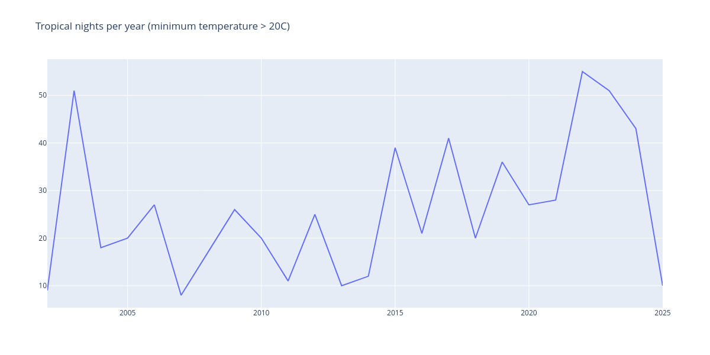
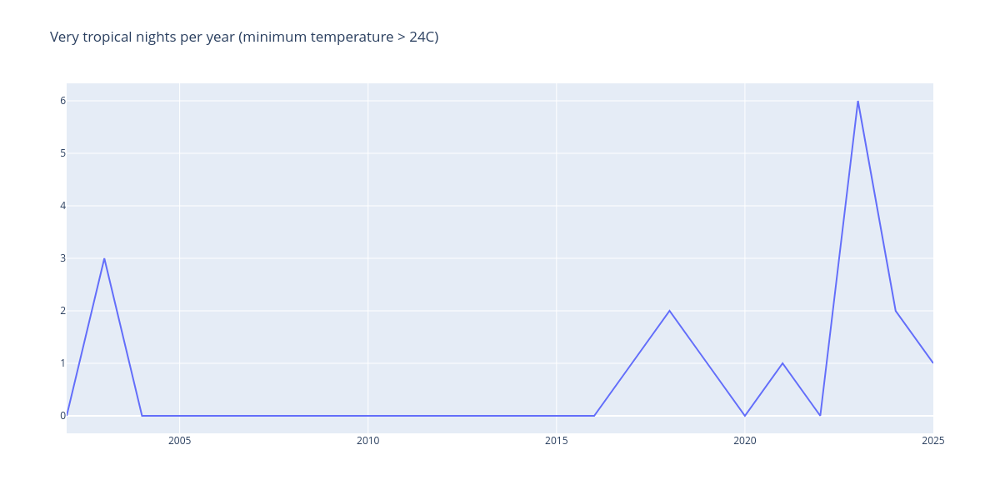
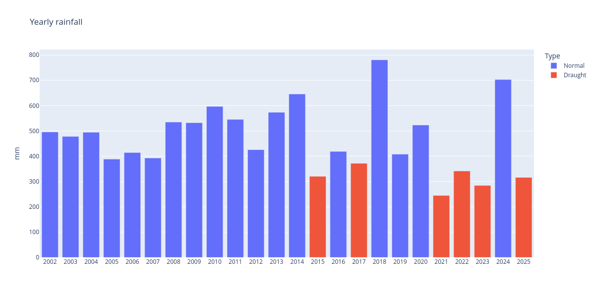

Climate extremes at home
Weather during a hot summer
Since the summer is striking us with a heatwave, I have been paying more and more attention to the local Meteobeguda data by using the Streamlit App that I recently discussed.
During such times, I like to keep checking for humidity and minimum temperatures. High humidity makes temperatures feel much worse, while the speed at which temperatures drop during the evening is related to the likelihood of having to endure a tropical night, that is: a night during which temperatures do not fall below the 20C mark.
On such nights, houses do not cool down quickly enough and you are in for a night of either sleeping with the AC on, or not having a proper rest. None of these options are desirable.
In the mornings, I check for the minimum temperature, typically between 6am and 7am, and I keep checking how quickly temperatures are rising. In the evenings, I check for the day’s maximum, usually between 13h and 16h, and wishing for temperatures to drop quickly.
While tropical nights are not uncommon where we live, there is a variation which I call a torrid night, defined as a night where the minimum temperature stays above 24C.
Last summer we had plenty of such nights, but we were even more worried about the serious draught that nearly depleted all water reservoirs supplying the Barcelona area. In this case, instead of checking for nonexisting rainfall data in our weather stations, we kept a constant eye on the Draught viewer, which is an excellent data visualization tool.
Climate Extremes
There is a sound hypothesis with a lot of evidence: climate change is making extreme weather more prevalent. In other words, the impact is not just that the average temperature is rising (which it is), but that extreme heatwaves will become more frequent, there will be less separation between draughts, when it rains it will be in violent episodes, known around here as a DANA, which translates to cut-off low.
We wish to explore how tropical nights, and especially torrid nights, have become much more prevalent than they used to be in recent times.
There are two metrics that are very interesting to track by using historic data. Both of them are witness to how quickly our climate is changing and becoming more extreme. This is both alarming and depressing.
Number of tropical nights


Total yearly rainfall
